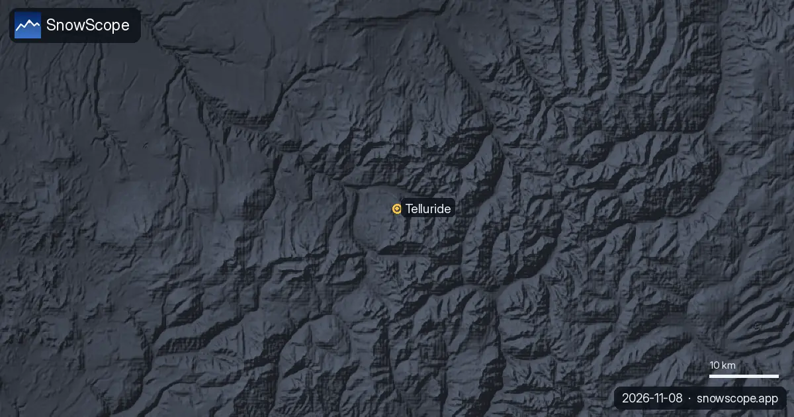
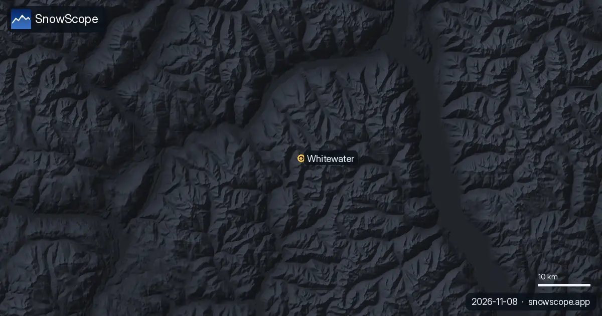

Partes de nieve · Dónde esquiar
Partes de nieve diarios para esquiadores: dónde está la nieve, qué llega y dónde esquiar, a partir del mapa de nieve de SnowScope y de las estaciones de medida. Cada cifra sale de los datos del día.

Llegar a Telluride en invierno, aeropuerto por aeropuerto: Telluride Regional, Montrose, la carretera 145 con la ley de tracción de Colorado y la telecabina gratuita a Mountain Village.

Cómo suele transcurrir un día de nieve en Whitewater, cerca de Nelson, desde la primera mirada a la previsión hasta la última bajada, con la nieve de 46 inviernos pasados a tres alturas.

Arc 1600, 1800, 1950 y 2000 comparados por nieve, pistas y acceso, con 46 inviernos pasados de nuestro histórico de nieve a tres alturas de Les Arcs.

Llegar a Snowbird en invierno: una sola carretera de cañón (SR-210), la ley de tracción de Utah, el bus de esquí de UTA y el trayecto desde el aeropuerto.

Whistler Blackcomb para cada nivel, con nuestro histórico: unos 370 cm de pico habitual a media montaña en 46 inviernos pasados, marzo y abril los meses más nevados.

De los campesinos walser al Weißer Ring: las fechas que hicieron Lech Zürs y, después, nuestro histórico de nieve antes y ahora, los primeros quince de 46 inviernos pasados frente a los últimos quince.

En coche a Palisades Tahoe en invierno: distancias desde Reno y Sacramento, cadenas R-1, R-2 y R-3 en California, aparcamiento con reserva, buses TART.

Una lista práctica para Stowe, Vermont: capas, protección de la cara, máscara, cantos afilados y calentadores, ligada a la nieve de 46 inviernos pasados en Mount Mansfield.

Esquiar en Lake Louise a principio de temporada: por qué empieza pronto, cómo suele ser la nieve de noviembre y diciembre en 46 inviernos pasados y cómo esquiar sobre una base todavía fina.

Qué es verdad de La Grave, la montaña del fuera de pista bajo la Meije: terreno, seguridad, nieve por mes y tendencia, a partir de 46 inviernos.

Big Sky, Montana, fácil de imaginar: 5850 acres bajo el Lone Peak, y una nieve unas cinco veces más gruesa cerca de la cima que en la base en 46 inviernos pasados.

Andorra no tiene un gran aeropuerto: cómo llegar a Grandvalira desde Barcelona o Toulouse, el túnel de Envalira, la carretera CG2 y los aparcamientos.

Magic Mountain en Londonderry, Vermont: una pequeña estación independiente con bosques empinados, una vieja telesilla roja y poca nieve natural. Cinco cosas que saber, con la nieve de 46 inviernos pasados.

Esquía primero en tu cabeza todo el desnivel de Revelstoke: la nieve en la cima, a media montaña y en la base del valle en 46 inviernos pasados, y cuándo está mejor cada parte.

Siete días en la Silvretta Arena, uno a uno: dónde está la nieve, cuándo pasar a Samnaun y qué dicen 46 inviernos pasados de la nieve de Ischgl a tres alturas.

Aspen Snowmass comparado: Snowmass tiene unas 75 in (190 cm) de pico habitual a media montaña en 46 inviernos pasados, Aspen Mountain unas 69 in (174 cm).

Gourette y Cauterets frente a frente: altitudes, nieve habitual por mes, mejores semanas y cómo llegar, a partir de 46 inviernos pasados.

Mad River Glen, Vermont: nieve natural, unas 30 in (75 cm) de pico habitual a media montaña en 46 inviernos pasados, febrero el más nevado. Tres formas de planear el día.

Banff Sunshine Village mes a mes: unos 100 cm a media montaña en un marzo habitual en 46 inviernos pasados, abril el más nevado arriba y temporada hasta finales de mayo.

Saas-Fee no tiene coches: el tren a Visp y el PostBus 511, la carretera del valle del Ródano y los trenes de coches, los aparcamientos y los buses gratis.

Alta, Utah, en preguntas: unas 109 in (276 cm) de pico habitual a media montaña en 46 inviernos pasados, por qué solo esquí, cuándo ir y cómo subir el cañón.

La nieve de hoy en los Pirineos, según nuestro modelo y la previsión, apunta a nieve fina de principio de temporada y aire templado que puede dejar …

Alpe d'Huez mira al sol. Cómo planear el día por la hora y la altura, con la nieve de 46 inviernos pasados desde los pueblos bajos hasta el Pic Blanc.


Baqueira-Beret está en el Valle de Arán, en la vertiente atlántica del Pirineo. Qué significa para su nieve, comprobado con 46 inviernos pasados frente a La Molina, y cuándo ir.

Retrato de Bonneval-sur-Arc en la Alta Maurienne: tejados de piedra, un puerto cerrado, un pequeño dominio y una nieve sorprendentemente gruesa, según 46 inviernos pasados.

Cómo pasar un primer día de esquí en Chamonix, de los Grands Montets sobre Argentière a la hora adecuada para cada ladera, con 46 inviernos de datos de nieve.

Cortina d'Ampezzo de tres maneras: Tofana, Faloria-Cristallo y Cinque Torri-Lagazuoi, con 46 inviernos de datos de nieve a tres alturas.

Chantarella, Marguns, Piz Nair, White Turf: las palabras que se oyen en St. Moritz, explicadas, y lo que 46 inviernos pasados de nuestro histórico de nieve dicen de cada altura de Corviglia.


Davos y Klosters comparten seis montañas de esquí. Un plan día a día, empezando por el Parsenn, con lo que 46 inviernos pasados de nuestro histórico dicen de sus alturas.

Cuándo reservar Courchevel y las 3 Vallées, qué pueblo elegir y dónde dura la nieve, a partir de 46 inviernos pasados.

St. Anton y Ski Arlberg a lo largo del invierno: el espesor de nieve habitual cada mes a tres alturas, a partir de 46 inviernos pasados.

Mount Washington Alpine Resort (Canadá) tiene hoy la nieve más profunda en el oeste de Canadá, con unos 145 cm en las pistas altas. Le siguen …

Un año de nieve en Sölden, fase a fase: cuándo blanquean los glaciares, el fin de semana de Copa del Mundo, el centro del invierno y las semanas de primavera, según 46 inviernos pasados a tres alturas.

La superficie nevada pasó de 0 sq mi (0 km²) el 6 de noviembre a 788 sq mi (2040 km²) hoy, y nuestra previsión da 104 sq mi (270 km²) el 11 de …

50 cm en la parte alta: por eso La Grave encabeza nuestra lista. Combinamos el espesor de nieve de hoy, la nieve nueva de las últimas 72 horas y la …

Un cuaderno práctico sobre Oukaïmeden, en el Alto Atlas: cuándo suele llegar la nieve, cuánta, qué laderas elegir y cómo llegar desde Marrakech.

Nuestra previsión sitúa la isoterma de 0 °C en los Pirineos entre 2610 m y 3840 m en los próximos días. En las horas más templadas la cota de nieve, …

Telluride, manto de nieve: una capa de 45 in en la parte alta (8 de noviembre). Donde más nieve hay en el oeste de EE. UU. es en Kendall Mountain: …

Cómo aprovechar un día en Luz-Ardiden, una pequeña estación sobre Luz-Saint-Sauveur en los Altos Pirineos: la carretera, los dos sectores, la nieve de 46 inviernos pasados y qué semanas elegir.

Whistler Blackcomb recibió 100 cm de nieve nueva en las últimas 72 horas, 68 cm de ellos en las últimas 24 horas. Ahora tiene unos 131 cm en las …

Michlifen, cerca de Ifrane, tiene nieve en episodios cortos más que una temporada. Lo que muestran 46 inviernos pasados, por qué el espesor habitual es cero y cómo estar allí los días buenos.

Tres maneras de pasar un día desde Méribel: al este hacia Courchevel, al sur hacia Val Thorens o en casa en el Mont Vallon, con la nieve de 46 inviernos pasados a tres alturas.

Mt Baker recibió 13 in (32 cm) de nieve nueva en las últimas 72 horas, 1 in (3 cm) de ellos en las últimas 24 horas. Ahora tiene unos 17 in (44 cm) …

Hasta el 10 de noviembre, nuestra previsión da 103 cm en Whistler Blackcomb, 99 cm en Ski Callaghan y 74 cm en Mount Cain Alpine Park. Las cifras de …

Donde más nieve hay en el oeste de EE. UU. es en Kendall Mountain: unos 50 in (127 cm) en las pistas altas, según nuestro modelo de nieve. Después …

Hasta el 10 de noviembre, nuestra previsión da 21 in (53 cm) en Mt Baker, 7 in (18 cm) en Mt. Hood Meadows y 6 in (14 cm) en Hurricane Ridge. Las …

Ski Callaghan recibió 56 cm de nieve nueva en las últimas 72 horas, 9 cm de ellos en las últimas 24 horas. Ahora tiene unos 48 cm en las pistas …

Hasta el 10 de noviembre, nuestra previsión da 36 cm en Orcières Merlette, 33 cm en Les Deux Alpes y 32 cm en La Grave. Las cifras de las estaciones …

Las estaciones de esquí del Atlas no tienen nieve en sus pistas hoy. Nuestro modelo solo encuentra nieve en las cumbres más altas: unos 80 km² de …

Artesina recibió 44 cm de nieve nueva en las últimas 72 horas. Ahora tiene unos 20 cm en las pistas altas, según nuestro modelo de nieve.

Estació d'esquí Port del Comte (España) tiene hoy la nieve más profunda en los Pirineos, con unos 29 cm en las pistas altas. Le siguen Aramón Cerler …

Hasta el 9 de noviembre, nuestra previsión da 13 in (33 cm) en Mt Baker, 5 in (12 cm) en Hurricane Ridge y 4 in (10 cm) en Mt. Hood Meadows. Las …

Ski Callaghan recibió 44 cm de nieve nueva en las últimas 72 horas, 32 cm de ellos en las últimas 24 horas. Ahora tiene unos 41 cm en las pistas …

Mt Baker recibió 11 in (27 cm) de nieve nueva en las últimas 72 horas, 4 in (11 cm) de ellos en las últimas 24 horas. Ahora tiene unos 19 in (47 cm) …

Hasta el 9 de noviembre, nuestra previsión da 4 in (11 cm) en Ski Eldorado y 4 in (10 cm) en Tuckerman Ravine. Las cifras de las estaciones de esquí …

Hasta el 9 de noviembre, nuestra previsión da 74 cm en Whistler Blackcomb, 63 cm en Ski Callaghan y 50 cm en Mount Cain Alpine Park. Las cifras de …

Oukaimden (Marruecos) tiene hoy la nieve más profunda en el Atlas (Marruecos), con unos 1 cm en las pistas altas. Le siguen Habri con 0 cm y …

Combinamos el espesor de nieve de hoy, la nieve nueva de las últimas 72 horas y la previsión para elegir Isola 2000, Artesina y Bonneval-sur-Arc. De …

Bonneval-sur-Arc (Francia) tiene hoy la nieve más profunda en los Alpes, con unos 52 cm en las pistas altas. Le siguen La Grave con 52 cm y Orelle …

Combinamos el espesor de nieve de hoy, la nieve nueva de las últimas 72 horas y la previsión para elegir Aramón Cerler, Rasos de Peguera y Masella. …

Isola 2000 recibió 62 cm de nieve nueva en las últimas 72 horas, 7 cm de ellos en las últimas 24 horas. Ahora tiene unos 19 cm en las pistas altas, …

Las estaciones de esquí del Atlas no tienen nieve en sus pistas hoy. Nuestro modelo solo encuentra nieve en las cumbres más altas: unos 60 km² de …

Los Alpes registraron nevadas importantes en las últimas 72 horas, con Isola 2000 informando de 58 cm de nieve nueva para el jueves 5 de noviembre de 2026.

Hasta el 8 de noviembre, nuestra previsión da 21 cm en Saas Grund, 18 cm en Grindelwald y 18 cm en Pescegallo. Las cifras de las estaciones de esquí …

Combinamos el espesor de nieve de hoy, la nieve nueva de las últimas 72 horas y la previsión para elegir Artesina, Isola 2000 y Riserva Bianca. De …

Rasos de Peguera recibió 15 cm de nieve nueva en las últimas 72 horas. Ahora tiene unos 20 cm en las pistas altas, según nuestro modelo de nieve.

Combinamos el espesor de nieve de hoy, la nieve nueva de las últimas 72 horas y la previsión para elegir Rasos de Peguera, Aramón Cerler y Masella. …

Donde más nieve hay en el oeste de EE. UU. es en Kendall Mountain: unos 51 in (130 cm) en las pistas altas, según nuestro modelo de nieve. Después …

Hasta el 8 de noviembre, nuestra previsión da 17 in (42 cm) en Mt Baker y 5 in (13 cm) en Hurricane Ridge. Las cifras de las estaciones de esquí son …

Combinamos el espesor de nieve de hoy, la nieve nueva de las últimas 72 horas y la previsión para elegir Kendall Mountain, Telluride y Mt Baker. De …

Donde más nieve hay en el oeste de Canadá es en Silver Star: unos 112 cm en las pistas altas, según nuestro modelo de nieve. Después vienen Big White …

Hasta el 8 de noviembre, nuestra previsión da 94 cm en Whistler Blackcomb, 93 cm en Ski Callaghan y 70 cm en Tweedsmuir Ski Club. Las cifras de las …

Donde más nieve hay en los Alpes es en Terenten: unos 73 cm en las pistas altas, según nuestro modelo de nieve. Después vienen Speikboden (50 cm) y …

Combinamos el espesor de nieve de hoy, la nieve nueva de las últimas 72 horas y la previsión para elegir Crissolo, Prali y La Grave. De estas …

Combinamos el espesor de nieve de hoy, la nieve nueva de las últimas 72 horas y la previsión para elegir Masella, Cauterets Cirque du Lys y Aramón …

Telluride recibió 12 in (31 cm) de nieve nueva en las últimas 72 horas, 1 in (3 cm) de ellos en las últimas 24 horas. Ahora tiene unos 46 in (118 cm) …

Donde más nieve hay en el oeste de EE. UU. es en Kendall Mountain: unos 48 in (122 cm) en las pistas altas, según nuestro modelo de nieve. Después …

Hasta el 7 de noviembre, nuestra previsión da 17 in (44 cm) en Mt Baker, 6 in (14 cm) en Crystal Mountain y 6 in (14 cm) en Stevens Pass. Las cifras …

Hasta el 7 de noviembre, nuestra previsión da 48 cm en Ski Callaghan, 47 cm en Whistler Blackcomb y 34 cm en Mount Cain Alpine Park. Las cifras de …

Combinamos el espesor de nieve de hoy, la nieve nueva de las últimas 72 horas y la previsión para elegir Mount Cain Alpine Park, Whistler Blackcomb y …

¿Qué estaciones tienen casi siempre nieve? Analizamos 46 inviernos pasados (1980-81–2025-26) para cada estación de nuestro mapa y contamos los días …

Kope recibió 21 cm de nieve nueva en las últimas 72 horas. Ahora tiene unos 11 cm en las pistas altas, según nuestro modelo de nieve.

Donde más nieve hay en los Alpes es en Bonneval-sur-Arc: unos 55 cm en las pistas altas, según nuestro modelo de nieve. Después vienen Schnalstal …

Hasta el 6 de noviembre, nuestra previsión da 37 cm en Chabanon, 34 cm en Dévoluy y 33 cm en Chaillol. Las cifras de las estaciones de esquí son …

Oukaimden recibió 14 cm de nieve nueva en las últimas 72 horas, 5 cm de ellos en las últimas 24 horas. Ahora tiene unos 3 cm en las pistas altas, …

Rasos de Peguera recibió 17 cm de nieve nueva en las últimas 72 horas, 17 cm de ellos en las últimas 24 horas. Ahora tiene unos 13 cm en las pistas …

Combinamos el espesor de nieve de hoy, la nieve nueva de las últimas 72 horas y la previsión para elegir Masella, Estació d'esquí de Port-Ainé y …

Silverton Mountain recibió 26 in (66 cm) de nieve nueva en las últimas 72 horas. Ahora tiene unos 52 in (131 cm) en las pistas altas, según nuestro …

Donde más nieve hay en el oeste de EE. UU. es en Kendall Mountain: unos 53 in (134 cm) en las pistas altas, según nuestro modelo de nieve. Después …

Combinamos el espesor de nieve de hoy, la nieve nueva de las últimas 72 horas y la previsión para elegir Silverton Mountain, Telluride y Lee's Ski …

Donde más nieve hay en el oeste de Canadá es en Big White: unos 91 cm en las pistas altas, según nuestro modelo de nieve. Después vienen Silver Star …

Hasta el 6 de noviembre, nuestra previsión da 33 cm en Ski Callaghan, 31 cm en Mount Cain Alpine Park y 25 cm en Whistler Blackcomb. Las cifras de …